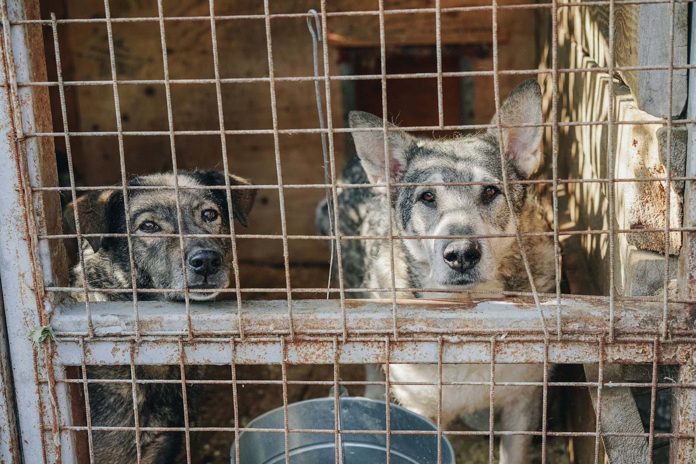
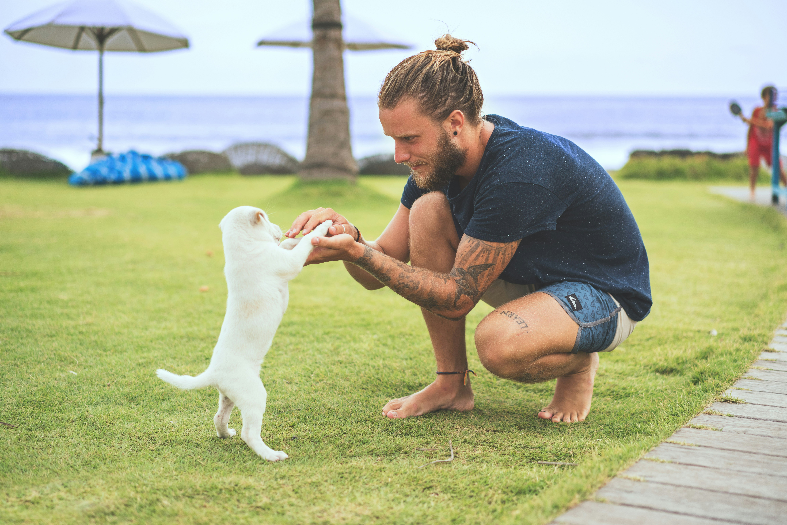
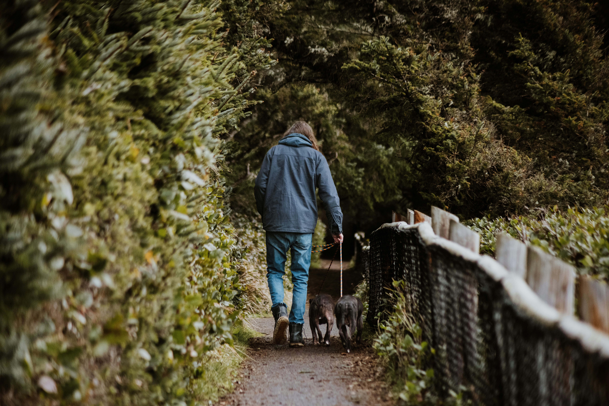
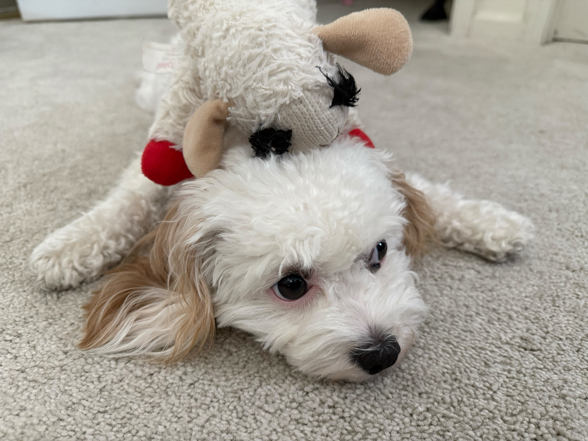

Dogs in the News

Local Shelter Hosts Adoption Event
The Sunnydale Animal Shelter is hosting a special adoption event this weekend. Families are encouraged to come and meet their future furry friends. With over 20 dogs available for adoption, there’s a perfect match for everyone.
Read More
Dog Training Classes Now Available
A new dog training program has launched in the downtown area. The classes are designed for all skill levels, from puppies to adult dogs.
Read More
Canine Heroes Recognized
This week, local heroes were honored at the annual Canine Awards Ceremony. Dogs from various backgrounds were celebrated for their bravery and service.
Read MoreIntroducing Dottie!

Origin
My sister flew all the way from San Francisco to Utah to pick up this adorable creature.
Read More
Breed
The Cavachon is a delightful hybrid breed, resulting from the cross between a Cavalier King Charles Spaniel and a Bichon Frise. Known for their friendly and affectionate nature, Cavachons make excellent family pets and companions.
Read More
Favorite activity
Puppies have a magical way of turning the simplest moments into pure joy, especially when it comes to their favorite activity: sleeping! With their tiny paws twitching and soft snores filling the air, they seem to drift off into a world of delightful dreams.
Read More